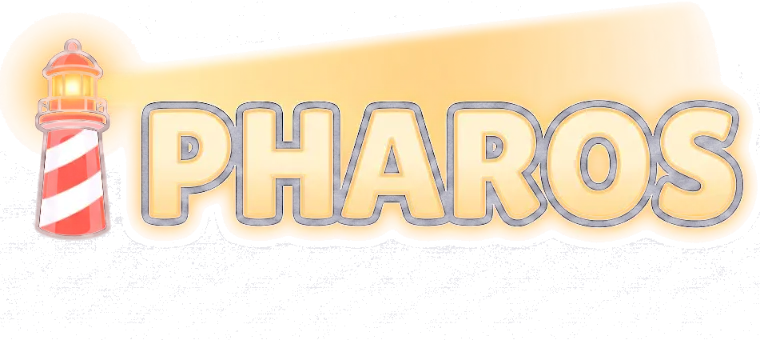

Upali svjetla Jadrana, otok po otok.
Napredak se pamti samo na ovom uređaju. Kôd napretka čuva ga i ako se podaci izbrišu.
Kopiraj kôd i spremi ga, npr. pošalji ga sebi u poruci. Na drugom uređaju ili nakon brisanja podataka zalijepi ga ovdje i dodirni „Učitaj”.
Pharos je opuštajuća logička igra. Kao čuvar svjetionika vodiš zraku svjetla do brodova i otok po otok pališ svjetla duž Jadrana.
Ime dolazi od grčkog naziva za Hvar i riječi za svjetionik.
Ideja i dizajn: Antonio Glavač
Obrisi obale i otoka: © OpenStreetMap contributors (ODbL).
Igra broji posjete i riješene razine, bez kolačića i bez osobnih podataka (GoatCounter).
Svaki osvijetljeni otok donosi jedan pravi jadranski svjetionik.